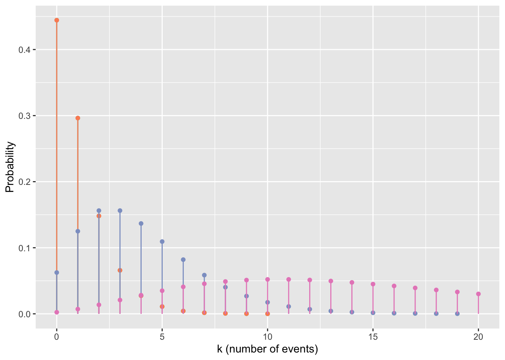

4 PDFs and PMFs
4.1 Beyond Normal
In our exploration of likelihoods, we did a little bit of work with the Normal probability density function. Here, we will state some characteristics of the normal distribution slightly more formally, and then we will get familiar with some other probability distributions (a.k.a. “the normal distribution’s wierd friends”).
4.2 Types of probability distributions
4.2.1 Continuous distributions
The probability distribution of a continuous variable (one that can take on continuous real values, at least within a certain range) is called a probability density function or PDF for short.
PDFs are functions of one continuous variable (we’ll call it \(x\)) that have two properties in common:
- The total area under the curve is 1 (\(\int_{-\infty}^{\infty} f(x)dx = 1\))
- The values of the function are non-negative (0, or a positive real number) for all real \(x\) (\(f(x) \geq 0 \forall x \in \mathbb{R}\))
For PDFs, the function values (\(y\)-axis values) are probability densities, useful for computing likelihoods; probabilities are given by finding areas under the curve.
4.2.2 Discrete Distributions
We use categorical as well as quantitative variables in our regression models, so it will prove useful to have some discrete probability distributions as well as continuous ones. Discrete distributions associate each possible value of a discrete variable with its probability of occurence.
A discrete probability distribution is characterized by a probability mass function or PMF for short (this is the discrete equivalent of a PDF).
A PMF is a function of one discrete variable (we’ll call it \(x\)) that have two properties in common:
- The sum of all the function’s values is 1 (\(\sum_{x \in S} f(x) =1\), where \(S\) is the set of all possible values \(x\) can have)
- All values of the function are between 0 and 1 inclusive (they are probabilities) (\(f(x) \in [0,1] \forall x \in S\))
4.3 Relevant Features of Distributions
For this course, the most important features to note about each probability distribuiton will be:
- The type of distribution: discrete or continuous?
- The support of the distribution: what range of possible values can the random variable \(X\) take on?
- The parameters of the distribution. Changing the parameters tunes the center and shape of the distribution, so these are what we need to estimate to fit a particular kind of distribution to a specific dataset. (For example, the parameters of the normal distribution are the mean \(\mu\) and the standard deviation \(\sigma\).)
- The shape of the distribution: what shapes can the function take one? (For example, the normal distribution is always unimodal and symmetric.)
- The PDF or PMF of the distribution. What mathematical expression controls the shape of the distribution?
- We will also note a few examples of variables that might be well modelled by each distribution.
4.4 Examples of Continuous Distributions
4.4.1 Normal
4.4.1.0.1 Type
Continuous
4.4.1.0.2 Support
All real numbers
4.4.1.0.3 Parameters
- \(\mu\), the mean, which can take on any real value
- \(\sigma\), the standard deviation, which can take on any positive real value
4.4.1.0.4 Shapes
The shape is always unimodal and symmetric.
4.4.1.0.5 PDF or PMF
The normal distribution has PDF:
\[ f(x) = \frac{1}{\sqrt{2\pi\sigma^2}}e^{\frac{(x-\mu)^2}{2\sigma^2}}\]
4.4.1.0.6 Examples
A normal distribution might be a good fit for data on childrens’ weights in kg, or for the duration of visits at a zoo, or…
4.4.2 Gamma
4.4.2.0.1 Type
Continuous
4.4.2.0.2 Support
positive real numbers
4.4.2.0.3 Parameters
There are two alternate but equivalent parameterizations for the gamma distribution.
The first option: \(\alpha\) (shape) and \(\beta\) (rate), where \(\alpha>0\) and \(\beta>0\)
The second option: \(k\) (shape) and \(\theta\) (scale), where \(k >0\) and \(\theta>0\).
Converting between the two parameterizations: \(\alpha = k\) and \(\beta = \frac{1}{\theta}\).
4.4.2.0.4 Shapes
The gamma distribution can take on a unimodal, symmetric shape or a unimodal shape with any amount of right skew (up to an exponential distribution shape).
Note: you don’t need to be familiar with exactly how the different values of parameters influence the shape of the gamma distribution PDF, so the curves here are not labelled with parameter values.
4.4.2.0.5 PDF or PMF
The gamma distribution has PDF:
\[ f(x) = \frac{1}{\Gamma(k) \theta^k}x^{(k-1)}e^{\frac{-x}{\theta}}\] Where \(\Gamma\) is the Gamma function (look up the definition if you choose), or equivalently,
\[ f(x) = \frac{\beta^{\alpha}}{\Gamma(\alpha)}x^{(\alpha-1)}e^{-\beta x}\]
4.4.2.0.6 Examples
Gamma distributions are often used to model things like wind speed or duration of an event (any quantity that might have right skew and is never negative).
4.4.3 Beta
4.4.3.0.1 Type
Continuous
4.4.3.0.2 Support
Real numbers between 0 and 1 ([0,1])
4.4.3.0.3 Parameters
\(\alpha\) (shape 1) and \(\beta\) (shape 2), both of which must be \(>1\).
4.4.3.0.4 Shapes
This distribution can take on almost any shape, for example:
gf_dist('beta', params = c(shape1=5, shape2=1)) |>
gf_dist('beta', params = c(shape1=1, shape2=3), color=colrs[1]) |>
gf_dist('beta', params = c(shape1=2, shape2=2), color=colrs[2]) |>
gf_dist('beta', params = c(shape1=2, shape2=5), color=colrs[3]) |>
gf_dist('beta', params = c(shape1=0.5, shape2=0.5), color=colrs[4]) |>
gf_labs(x='Possible Values of Variable', y='Probability Density') |>
gf_lims(y=c(0,2.5))
4.4.3.0.5 PDF or PMF
The PDF is:
\[ f(x) = \frac{x^{(\alpha -1)}(1-x)^{(\beta-1)}}{ B(\alpha, \beta)}\] Where \(B\) is the Beta function (again, feel free to look up the definition if you are interested).
4.4.3.0.6 Examples
Beta distributions could be used for any variable that takes on values between 0-1, for example, baseball players’ batting averages, or test scores (as proportions).
4.5 Examples of Discrete Distributions
4.5.1 Binomial
4.5.1.0.1 Type
Discrete
4.5.1.0.2 Support
You can think about the support of this distribution two ways. Technically, the support is \(k= 0, 1,2,3,\dots\): 0 and positive integers, interpreted as the number of “successes” in \(n\) binomial trials. Binomial trials are independent observations of a process that has two possible outcomes, “success” or “failure”, with set probabilities of each occurring. (And probabilities of success and failure must sum to 1.)
So, for each individual binomial trial, the possible outcomes are 0 and 1, often interpreted as TRUE and FALSE or “success” and “failure”.
For our purposes, this distribution will be useful for modelling response variables that are categorical with two possible values (and the \(n\) trials will be the \(n\) rows in our dataset).
4.5.1.0.3 Parameters
Parameters are \(n\), the number of independent trials, and \(p\), the probability of success in each trial.
4.5.1.0.4 Shapes
The figure below shows the shape of binomial distributions with fixed \(n=100\) and varying \(p\):
gf_dist('binom', params = c(size=100, prob=0.1), color=colrs[1]) |>
gf_dist('binom', params = c(size=100, prob=0.25), color=colrs[2]) |>
gf_dist('binom', params = c(size=100, prob=0.5), color=colrs[3]) |>
gf_dist('binom', params = c(size=100, prob=0.75), color=colrs[4]) |>
gf_dist('binom', params = c(size=100, prob=0.99), color=colrs[5]) |>
gf_labs(x='k, the Number of Successes in 100 Trials', y='Probability')The \(p\) used were 0.1, 0.25, 0.5, 0.75, and 0.99. Can you tell which is which?
4.5.1.0.5 PDF or PMF
The PMF for the binomial distribution is: \[ P(X=k \vert n,p) = {n \choose k} p^k (1-p)^{n-k}\]
Where \(k\) is the number of successes observed in \(n\) trials (you can think of \(k\) as our “x-axis variable” for this PMF).
4.5.1.0.6 Examples
We might use this distribution to model any categorical variable with two possible values, like Age (if possible values are “adult” and “child”) or health status (“has disease” or “does not have disease”). We’ll think of each observation in the dataset as one of the \(n\) indpendent trials, with one of two possible outcomes for each trial.
4.5.2 Poisson
4.5.2.0.1 Type
Discrete
4.5.2.0.2 Support
The support is 0 and positive integers (i.e., this distribution works well for count data).
4.5.2.0.3 Parameters
The Poisson distribution has one parameter, \(\lambda\) (the event rate per unit time) which must be greater than 0.
4.5.2.0.4 Shapes
The distribution can take on unimodal shapes with varying amounts of right skew (from none, to an exponential shape).
colrs <- RColorBrewer::brewer.pal(8, 'Set2')
gf_dist('pois', params=c(lambda=0.5), color=colrs[1]) |>
gf_dist('pois', params=c(lambda=3), color=colrs[2]) |>
gf_dist('pois', params=c(lambda=6), color=colrs[3]) |>
gf_dist('pois', params=c(lambda=15), color=colrs[4]) |>
gf_labs(x='k (number of events)', y='Probability')4.5.2.0.5 PDF or PMF
The Poisson PMF is:
\[P(X=k \vert \lambda) = \frac{\lambda^k e^{-\lambda}}{k!}\]
4.5.2.0.6 Examples
The Poisson distribution might be used to model any response variable that is comprised of counts, for example, the number of birds sighted in a bird survey, or the number of people admitted to an emergency room each hour.
4.5.3 Negative Binomial
There are two versions or “types” of this distribution, cleverly known as NB1 (type 1) and NB2 (type 2). NB1 has “constant overdispersion” – the variance of the distribution is greater than the mean according to a constant ratio. NB2 has “variable overdispersion” – the variance is a quadratic function of the mean. The NB2 is the one that corresponds directly to conceptualization in terms of binomial trials (with the PMF giving the probability of observing \(y\) failures before the \(r\)th success). Hardin and Hilbe 2007 describe the negative binomial this way: “Instead of counts entering uniformly, we see counts entering with a specific gamma-distributed shape.”
4.5.3.0.1 Type
Discrete
4.5.3.0.2 Support
The support is 0 and positive integers (i.e., this distribution works well for count data). It also has a derivation in terms of binomial trials, but in our regression models, we will only use it with count data.
4.5.3.0.3 Parameters
A common parameterization of the negative binomial (online and in actuarial science) has parameters \(p\), the probability of success on each binomial trial, and \(r\), the number of failures observed. The PMF then gives the probability of observing \(k\) failures before the \(r\)th success in a series of Bernoulli trials.
Here, we will use an alternate parameterization. The other common way to parameterize and derive the NB is as a Poisson-gamma mixture – a modified version of a Poisson distribution. In this scheme, the parameters of the distribution are \(\mu\) and \(\alpha\).
4.5.3.0.4 Shapes
These distributions can take on unimodal shapes with varying amounts of right skew. In NB2 (type 2) distributions the variance (spread) is larger relative to the mean.
NB1:
library(gamlss.dist)
colrs <- RColorBrewer::brewer.pal(8, 'Set2')
gf_dist('NBI', params=c(mu=1, sigma=0.5), color=colrs[1]) |>
gf_dist('NBI', params=c(mu=1, sigma=0.5), color=colrs[2]) |>
gf_dist('NBI', params=c(mu=4, sigma=1), color=colrs[3]) |>
gf_dist('NBI', params=c(mu=15, sigma=4), color=colrs[4]) |>
gf_lims(x=c(0,20)) |>
gf_labs(x='k (number of events)', y='Probability')NB2:
colrs <- RColorBrewer::brewer.pal(8, 'Set2')
gf_dist('NBII', params=c(mu=1, sigma=0.5), color=colrs[1]) |>
gf_dist('NBII', params=c(mu=1, sigma=0.5), color=colrs[2]) |>
gf_dist('NBII', params=c(mu=4, sigma=1), color=colrs[3]) |>
gf_dist('NBII', params=c(mu=15, sigma=4), color=colrs[4]) |>
gf_lims(x=c(0,20)) |>
gf_labs(x='k (number of events)', y='Probability')
4.5.3.0.5 PDF or PMF
Details of the parameterizations and likelihood and fitting of NB1 and NB2 distributions can be found in Hardin and Hilbe 2007, if you are interested.
The PMF for the NB1, where the variance is a constant multiple of the mean, is:
\[ f(x \vert \mu, \alpha) = \frac{\Gamma(x + \mu)}{\Gamma(\mu)\Gamma(x+1)}(\frac{1}{1+\alpha})^\mu(\frac{\alpha}{1+\alpha})^x \]
Where \(\Gamma\) is a Gamma function. Note that if \(\alpha\) = 0 this becomes a Poisson distribution, so the Poisson is a special case of the NB1.
The PMF for the NB2, where the variance is a quadratic function of the mean, is:
\[ f(x \vert \mu, \alpha) = \frac{\Gamma(x + \frac{1}{\alpha})}{\Gamma(\frac{1}{\alpha})\Gamma(x+1)}(\frac{1}{1+\alpha \mu})^{\frac{1}{\alpha}}(1 - \frac{1}{1+\alpha \mu})^x \]
4.5.3.0.6 Examples
NB distributions are good models for overdispersed count data, where (in the regression context) the residual variance is not equal to the expected (predicted) value. (Note that if you are reading this before learning about regression models for count data, you may not understand this sentence yet…don’t worry, it will make sense when you return later!) Some examples might include sightings data on numbers of animals seen on wildlife surveys, or the number of items bought per order at an online retailer.
4.5.4 A Mixture Distribution: Tweedie
The Tweedie family of distributions is a very large one - depending on the values of the different parameters, the PMF/PDF can be written in many different ways, and it can take on many different shapes. The description below is a simplified one, geared toward the types of Tweedie distributions we are likely to try to use in regression models in this course – mainly the “compound Poisson-gamma” type.
Some extra resources for which you will not be held responsible in this course:
You can find an accessible description and example of this kind of distribution at: http://www.notenoughthoughts.net/posts/modeling-activity.html.
The following site may also be useful in regard to using the Tweedie in regression models: http://support.sas.com/documentation/cdl/en/statug/68162/HTML/default/viewer.htm#statug_genmod_details28.htm
4.5.4.0.1 Type
These distributions are both continuous and discrete - a kind of mix of a Poisson distribution and gamma distribution(s).
4.5.4.0.2 Support
The support is non-negative real numbers (greater than or equal to 0).
4.5.4.0.3 Parameters
(Note: there are multiple different ways to parameterize these distributions.) We will use:
- \(p\), the index or power parameter, which can be 0 (resulting in a normal distribution), 1 (resulting in a Poisson distribution), \(1 < p < 2\) (a compound Poisson-gamma distribution – what we will mainly use), 2 (a gamma distribution), 3 (an inverse Gaussian distribution), \(<3\) (a positive stable distribution), or \(\infty\) (an extreme positive stable distribuiton). For the case where \(1 < p < 2\), and the distribution is a compound of a Poisson and a gamma, then \(p = \frac{k+2}{k+1}\) where \(k\) is the parameter of the gamma distribution. When \(1<p<2\), \(p\) closer to 1 means thant the Poisson distribution (the mass at 0) gets more “weight” in the compound distribution, and values of \(p\) closer to 2 mean that the gamma distribution gets more “weight.”
- \(\mu\). For the case where \(1 < p < 2\), and the distribution is a compound of a Poisson and a gamma, then \(\mu = \lambda k \theta\) where \(\lambda\) is the parameter of the Poisson distribution and \(k\) and \(\theta\) are the parameters of the gamma.
- \(\phi\) For the case where \(1 < p < 2\), and the distribution is a compound of a Poisson and a gamma, then \(\phi = \frac{\lambda^{(1-p)} (k \theta) ^{(2-p)}}{2-p}\) where \(\lambda\) is the parameter of the Poisson distribution and \(k\) and \(\theta\) are the parameters of the gamma.
4.5.4.0.4 Shapes
A compound Poisson-gamma Tweedie distribution can take on varying shapes; the main characteristic of interest for us is that it can have a mass at 0, then a unimodal or multimodal distribution with a long right tail (lots of right skew).
library(tweedie)
tex <- data.frame(x=seq(from=0, by=0.1, to=50)) |>
mutate(dens.a = dtweedie(x, xi = 1.1, mu=4, phi=2)) |>
mutate(dens.b = dtweedie(x, xi = 1.3, mu=4, phi=0.5)) |>
mutate(dens.c = dtweedie(x, xi = 1.5, mu=4, phi=0.3)) |>
mutate(dens.d = dtweedie(x, xi = 1.8, mu=4, phi=1)) |>
mutate(dens.e = dtweedie(x, xi = 1.5, mu=4, phi=5))
gf_line(dens.a ~ x, data=tex, color=colrs[1]) |>
gf_line(dens.b ~x, data=tex, color=colrs[2]) |>
gf_line(dens.c ~x, data=tex, color=colrs[3]) |>
gf_line(dens.d ~x, data=tex, color=colrs[4]) |>
gf_line(dens.e ~x, data=tex, color=colrs[5])4.5.4.0.5 PDF or PMF
A Tweedie distribution with \(p>1\) has the form:
\[ f(X \vert \mu, \phi, p) = a(x, \phi)e^{\frac{1}{\phi}(\frac{x\mu^{(1-p)}}{(1-p)} - \kappa(\mu,p))}\]
where \(\kappa(\mu,p) = \frac{\mu^{(2-p)}}{(2-p)}\) if \(p\neq2\), and if \(p=2\), \(\kappa(\mu,p) = log(\mu)\); but \(a(x,\phi)\) is a function that does not have an analytical expression. This expression is from SAS documentation at https://support.sas.com/rnd/app/stat/examples/tweedie/tweedie.pdf.
Alternately (and more simply(?)), a Tweedie distribution with \(1 < p < 2\) is a compound of a Poisson distribution with parameter \(\lambda\) and a gamma distribution with parameters \(k\) and \(\theta\). For example:
“Suppose that airplanes arrive at an airport following a Poisson process, and the number of passengers in each airplane follows a certain gamma distribution. Then, the number of passengers arriving at the airport follows a compound Poisson gamma process \[ Y = \sum_{i=1}^{N} D_i\] where \(N\) is the Poisson process that the airplanes follow, and \(D_i\) is the gamma distribution that the passengers follow.” (Thanks to D. Mao, http://math.uchicago.edu/~may/REU2013/REUPapers/Mao.pdf for this example.)
4.5.4.0.6 Examples
The Tweedie distributions may be useful for “zero-inflated” data, where there is a class of observations for which the observed value of the variable is always zero, and another class for which the variable takes on positive continuous values. For example, this might model the number of birds present per unit area (when the study area includes places of unsuitable habitat where none are ever found), or perhaps the quantity of alcohol consumed per week by different people (some of whom may drink varying amounts, and others of whom may never drink at all).